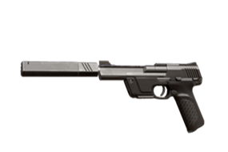
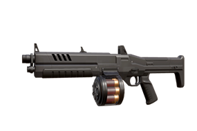
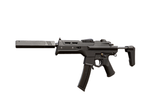
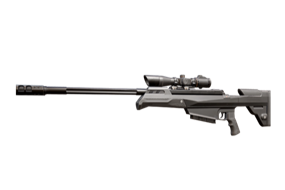
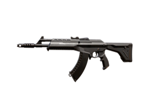
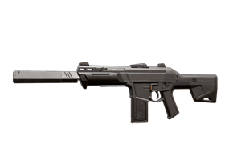
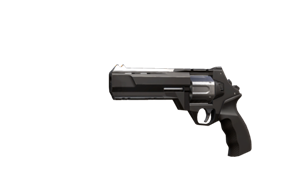

鬼魅
鬼魅是最为平衡的手枪，中等威力、消音效果、较高准确性、价格低廉的组合造就了它能与部分主武器一搏的可靠性。

判官
霰弹枪中的老大，相较雄鹿，它的连喷具有更大的近战杀伤力。机动性强、擅长贴脸作战的角色使用它，能发挥出奇效。

骇灵
身为冲锋枪，骇灵切枪、换弹、射速快，而这注定牺牲了它的伤害。它的配合战术主要是蹲守和绕后，但是少有人发现，作战强化状态下的骇灵正面不输步枪。

冥驹
游戏中单发伤害最高的枪，拥有着上半身一枪秒的绝技。缺点是换弹慢，笨重，因此防守性强，进攻一般。所以被冥驹架住时，请避其锋芒。

狂徒
没有头能挡住狂徒一枪。作为AK的改版，狂徒传承了它的高后座、高伤害，以及极高的玩家热度。可以说，瓦罗兰特的点头玩法正是狂徒带动的。

奥丁
枪如其名，奥丁掌管着对敌人的审判。100发载弹量和较小的开镜散布成就了奥丁防御主力的地位，为战场提供强大的火力压制。

幻影
作为能与狂徒掰手腕的步枪，幻影主打散布小、射速快。幻影威力较高，近距离可以打头秒，很适合进攻。因此有“进攻全甲配幻影，防守角落大奥丁”的说法。

正义
左轮在现实生活中以大威力著称，游戏中也不例外。正义拥有近距离爆头秒杀的能力，常被作为存钱局的平替。不过它的慢回弹、大后坐使它非常桀骜。